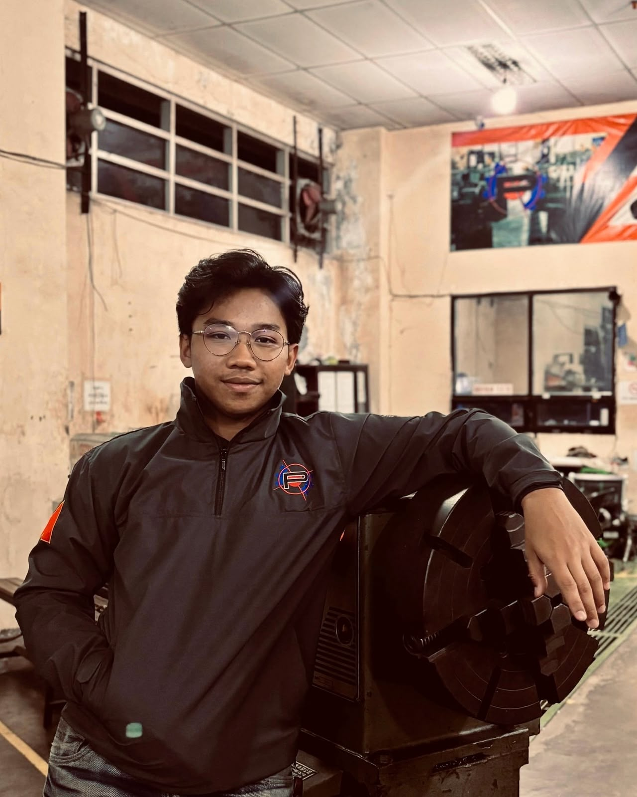

Recent Mechanical Engineering graduate from Brawijaya University (GPA 3.28/4.00) with a thesis on tensile strength optimization of dissimilar friction-welded joints (Al 6061 to ST60 steel) using Response Surface Methodology in Minitab, and a foundation in equipment maintenance, root cause analysis (RCA), and HSE practices. I contributed to a maintenance improvement project at APRIL Group using Fishbone, Why-Why and PDCA methods that reduced overhaul downtime by 50%, supervised multi-machine laboratory operations, and led large-scale organizational projects.
I want to apply mechanical engineering fundamentals, equipment maintenance and leadership skills to drive operational efficiency in engineering environments.
Hobby: tennis and motorcycle touring
Basic Industrial Welding (24 hours, SPPVP Lampung, Kemnaker RI): workplace preparation, welding process and equipment, WPS identification and visual weld inspection. EF SET 72/100, C2 Proficient. Certificates are available on request.
Optimized tensile strength and interface morphology of bimetallic joints made by rotary friction welding, using a 3-factor, 3-level Box-Behnken design (chamfer angle, friction time, friction pressure).
An automated irrigation system that waters individual plant coordinates with a 2-axis CNC plotter, driven by IoT soil moisture sensors and a machine learning model. I led the mechanical fabrication, structural assembly and alignment of the plotter.
Open to maintenance, manufacturing and engineering roles. Email is the quickest way to reach me.